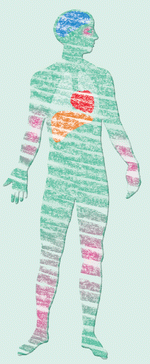

Neben der anregenden Wirkung hat Alkohol viele unerwünschte Nebenwirkungen, die sich vor allem bei der Arbeit und im Straßenverkehr fatal auswirken.
Wirkungen, die sofort eintreten:
| Ab 0,2 ‰ | Verlängerung der Reaktionszeit, Beinträchtigung der Aufmerksamkeit |
| Ab 0,3 ‰ | Nachlassen der Sehleistung, relative Fahruntüchtigkeit |
| Ab 0,5 ‰ | Fehleinschätzung von Geschwindigkeit und Entfernung, Abnahme des Hörvermögens |
| Ab 0,7 ‰ | Gleichgewichtsstörungen, Nachlassen der Nachtsehfähigkeit, deutliche Verlängerung der Reaktionszeit |
| Ab 0,8 ‰ | Ausgeprägte Konzentrationsschwäche, Sehleistung um 25 % herabgesetzt ("Tunnelblick") |
| Ab 1,1 ‰ | Gleichgewichtsstörungen, Sprechstörungen, massive Aufmerksamkeits- und Konzentrationsstörungen, Beginn der absoluten Fahruntüchtigkeit |
Je höher der Promillewert steigt, desto mehr verstärken sich diese Symptome. Ab 4,0 ‰ können Lähmungen und Atemstillstand eintreten.
Wirkungen, die auf lange Sicht eintreten:
| Die Leber reagiert mit Entzündungen, Verfettung und Vernarbung. Das führt zu der gefürchteten Leberzirrhose. | |
| Die Nerven werden geschädigt. Das macht sich durch Gefühls- und Bewegungsstörungen in den Beinen bemerkbar. Auch die Gehirnleistungen lassen nach. | |
| Das Herz-Kreislauf-System wird geschädigt. |
 |
Bei Frauen können bereits 25 – 30 g Alkohol täglich, bei Männern mehr als 40 g täglich, solche Schäden hervorrufen (WHO-Werte) |